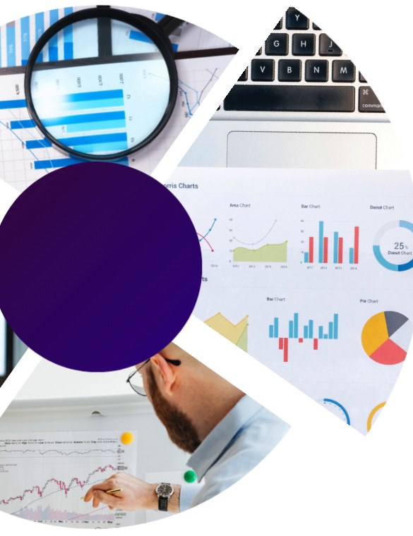
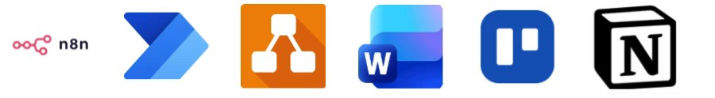
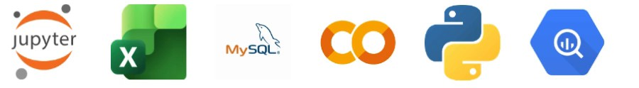

Hello !
I’m Rahman
Data Enthusiast
Combining Technical Expertise and Business Understanding to Create Data-Driven Solutions
Rahman CVJourney of Rahman
Final-year Business Management student with hands-on experience in market research, business analysis, and project execution. Ex-intern at Telkomsel in the SME GTM team, working with business data and dashboards to support data driven decision-making. Experienced in transforming data into actionable insights through case studies and real-world projects using SQL, Python, Power BI, and Google Looker Studio. As a Founder, I have worked closely with cross-functional teams to deliver data-driven solutions, identify performance gaps, and support strategic decision-making while bridging business needs with analytical insights to produce measurable outcomes
-
2023
Central Computer Improvement
Data Researcher · Feb to Dec 2023- Analyzed data from multiple datasets to identify trends and key insights.
- Actively contributed actionable insights and shared best practices during weekly team meetings, resulting in improved team proficiency.
-
2024
Starticas
Founder · Mar 2024 to Dec 2025- Led a cross-disciplinary team of 20 members to deliver social-impact initiatives.
- Selected for incubation at Bandung Techno Park and secured expressions of interest from 3 external organizations.
-
2025
Bank Muamalat x Rakamin
Business Intelligence Intern · Oct to Nov 2025- Analyzed 10K+ transactions using BigQuery and Looker Studio, identifying a 7.8% revenue decline.
- Proposed 4 data-backed retention strategies to boost repeat orders by 20% and average order value by 10%.
-
2026
Telkomsel
SME GTM Intern · Feb to Jul 2026- Built 3 dashboards across 10,000+ datasets and scraped 100,000+ SME records to identify market opportunities.
- Automated customer classification using n8n and streamlined contract renewals with Power Automate.
Why Me?
Exploring New Possibilities through Curiosity while Transforming Data into Actionable Business Solutions
A strong drive to explore new business opportunities and expand knowledge across business strategy, data analytics, and project management. Demonstrated through startup incubation programs, market research involving 300+ respondents, and 180+ hours of professional training in Google Project Management and Data Science. This curiosity has translated into hands-on experience developing go-to-market strategies, validating business concepts, and leading startup initiatives from early-stage ideas toward practical implementation.
A data-driven approach to transforming complex information into actionable business insights and strategic decisions. Experienced in scraping and analyzing 100,000+ SME records, developing sales performance dashboards, and mapping Account Managers to revenue opportunities across Indonesian markets. Further demonstrated through the analysis of 10,000+ transactions, identifying a 7.8% revenue decline associated with low retention and proposing 4 strategies projected to increase repeat orders by 20% and average order value by 10%.
Proven adaptability in streamlining business processes, coordinating cross-functional operations, and translating business requirements into practical solutions. Developed n8n automation to classify customer needs into 5 categories and route emails to the responsible divisions and built Power Automate workflows for contract renewal processes. Complemented by experience leading a multidisciplinary team of 20 members at Starticas.
Rahman’s
Focus Area

- Process Improvement
- Business Requirement & Analysis
- Project Management
- Problem Solving & Critical Thinking
- Business Process Modeling
- Design Thinking
Translating business requirements into actionable solutions through process improvement, workflow automation, and cross-functional collaboration. Experienced in developing 3 sales dashboards at Telkomsel, automating customer classification across 5 categories using n8n, and streamlining contract renewal processes with Power Automate.
Skilled in business requirements analysis, process mapping, and project coordination to identify operational gaps and improve workflows. Supported by experience leading a multidisciplinary team of 20 members and developing go-to-market strategies to align business objectives with practical solutions.
Tools

- Data Visualization
- Data Cleaning & Preprocessing
- SQL
- Exploratory Data Analysis (EDA)
- Data Collection & Cleaning
- Python
Transforming raw data into meaningful insights through data collection, cleaning, exploratory analysis, and visualization. Experienced in processing 100,000+ SME records, analyzing 10,000+ transactions, and conducting market research involving 300+ respondents to identify trends and business opportunities.
Proficient in SQL, Python, Microsoft Excel, and Google Colab to support end-to-end analytical workflows. Identified a 7.8% revenue decline associated with low retention and proposed 4 data-driven strategies projected to increase repeat orders by 20% and average order value by 10%.
Tools

- BI Solution Development
- Dashboard Development
- SQL
- KPI & Performance Monitoring
- Data Integration
- ETL Pipelines
Developing data-driven reporting solutions to support KPI monitoring, sales performance evaluation, and strategic decision-making. Experienced in building 3 performance dashboards using Google Looker Studio, monitoring Account Manager performance, and analyzing 100,000+ SME opportunity records to identify pipeline trends and revenue potential.
Proficient in Google Looker Studio, Google BigQuery, and Microsoft Excel for dashboard development and performance reporting. Additional experience mapping Account Managers to market revenue opportunities across Indonesia and translating business metrics into actionable insights.